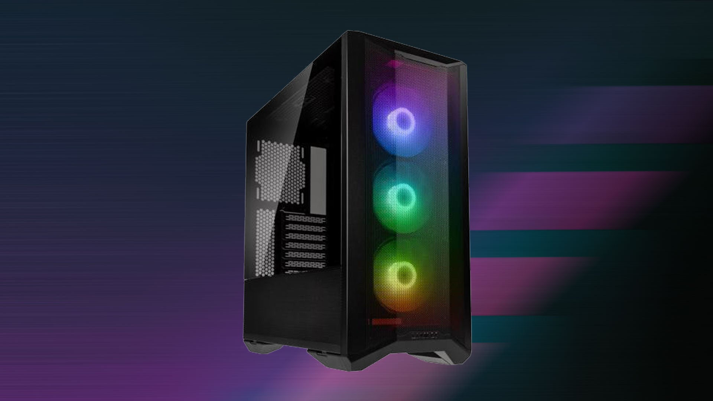

The Case

The case is a fairly simple component. All of the other parts you buy need to be
stored somewhere, and that place would be the case. It is where all of your parts,
colors, fans, and power will be stored, and where everything else in your entire setup
will come back to. All devices have a case of some sort, whether that be the small box
in an all-in-one, under the keyboard of a laptop, or behind the screen of your phone.
But in the case (haha) of PCs, they’re a lot bigger and don’t connect to the monitor,
because the parts you’re using are so much bigger and stronger than the parts you buy
from a laptop company.
Cooling
When all of your components are working at the same time, they are going to get very hot.
And unlike the CPU which has its own cooler, there's no way for the other parts to cool down
automatically, without being shut off. That's why we have fans. When it comes to case fans,
there are 2 types; intake and exhaust. The intake fans draw in clean air from outside the PC,
and move it into the case, so the parts don't overheat from all the hot air that they're releasing.
This hot air is then removed from the PC through the exhaust fans. Intake and exhaust work together
to provide a steady circuit of clean air throughout the PC, and make sure it's always being filtered
to get rid of excess contaminants and heat.
What Case Should I Get?
| Case Type |
Description |
| Mini Tower |
Mini tower cases are perfect for lower end builds, with their compact size, resulting in a less
hefty cost. They require less cooling, but can sometimes look a little odd if are placed on a desk
next to a tall monitor, and in a bigger setup in general. It could just look a little disproportionate.
Sometimes people with high quality parts like to fit their entire build into a mini tower, and if that's you,
something to make sure of is that you know for sure that all your parts are going to be able to fit in the model
easily, and be able to make minor adjustments accordingly.
|
| Mid Tower |
Mid tower cases are the most commonly bought, because they're a nice in-the-middle decision. You cant go wrong
when it comes to looks, because worst case scenario, it's a little bigger or a little smaller than everything else,
which is unnoticable. It's perfect for a mid range PC, but you can use it for any range build. Just make sure
you have space for it in your budget.
|
| Full Tower |
Full tower cases are the biggest of the bunch, and are most commonly used in super builds. A lot of the time, it's
excessive to buy one, but if you are planning to put more components in than the typical computer has, go right
ahead. But other than that, your best bet is to stick to mid towers and mini towers, because buying a full tower will
cost you extra money that you easily could've saved.
|
A controlling factor of what case you get is the motherboard. The first thing you should do when buying a
case is know what kind of motherboard, and then make sure you’re browning cases that can support it. Cases
could range in price depending on size, as well as aesthetics. Some cases allow for more storage devices,
extra graphics cards (even though this is often very excessive), vertical mounting, or the ability to install
extra lighting. Others come with some fans pre installed, or lights pre installed and wired.